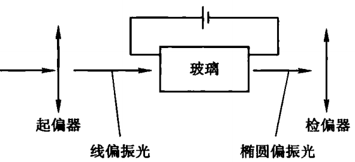
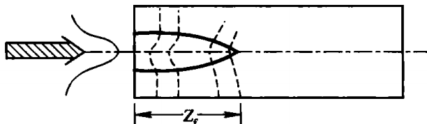

1875年，Kerr发现：

线偏振光通过外加电场作用的玻璃时，会变成椭圆偏振光；旋转检偏器时，输出光不消失.
“旋转检偏器时，输出光不消失”，就是说明了输出光为非线偏振光.
这种现象表明：玻璃在外加恒定电场的作用下，由原来的各向同性变成了光学各向异性，外加电场感应引起了双折射，其折射率的变化与外加电场的平方成正比.
从非线性光学的角度来看，Kerr效应是外加恒定电场与光电场在介质中通过三阶非线性极化率产生的三阶非线性极化效应.
电场与光电场必须同时存在，电场是用来使玻璃变为各向异性的，光电场是入射的线偏振光.
[设]介质受恒定电场\(\boldsymbol{E}_0\)与光电场\(\boldsymbol{E}\exp{(-i\omega t)} + c.c.\)的作用.
$$\begin{align} P_\mu(\omega,t) &= P_\mu^{(1)}(\omega,t) + P_\mu^{(3)}(\omega,t) \\ &= \epsilon_0[\chi_{\mu\alpha}^{(1)}(\omega) + 3\chi_{\mu\alpha\beta\gamma}^{(3)}(\omega,0,0)E_{0\beta}E_{0\gamma}]E_\alpha e^{-i\omega t} + c.c. \end{align}$$这表明：由三阶非线性极化的作用，恒定电场的存在使得介质的介电张量元素\(\epsilon_{\mu\alpha}\)改变了\(\delta\epsilon_{\mu\alpha}\)，且：
$$\delta\epsilon_{\mu\alpha} = 3\epsilon_0\chi_{\mu\alpha\beta\gamma}^{(3)}(\omega,0,0)E_{0\beta}E_{0\gamma}$$将Kerr效应中的恒定电场\(\boldsymbol{E}_0\)替换为光电场，就是光Kerr效应.
[设]频率为\(\omega\)的光电场作用于介质的同时，还有另一束频率为\(\omega'\)的任意光电场作用于该介质.
由于\(\omega'\)光电场的作用，会使介质对\(\omega\)光波的作用有所改变.
Kerr常数用于刻画光Kerr效应的大小.
一束强激光会因为光Kerr效应产生一些光波的自作用现象：
自聚焦现象是感生透镜效应，这种效应是由于通过非线性介质的激光束的自作用使其薄面发生畸变造成的.
[设]一束具有高斯横向分布的激光在介质中传播.
此时介质的折射率为：
$$n = n_0 + \Delta n(|E|)^2$$若\(\Delta n\)为正值，由于光束中心部分的光强较强，则中心部分的折射率变化较光束边缘部分的变化大，因此光束在中心比边缘的传播速度慢，结果使介质中传播的光束波面畸变越来越严重，这种畸变类似光束经过正透镜，光线本身呈现自聚焦现象（如图所示，虚线为波面，实线为光线）.

由于具有有限界面的光束还要经受衍射作用，所以只有当自聚焦效应大于衍射效应时，光才表现出自聚焦现象.
粗略地说，自聚焦效应正比于\(\Delta n(|E|^2)\)，衍射效应反比于光束半径的平方，因此，光束在介质中传播时，其自聚焦效应与衍射效应均越来越强.
若衍射效应增强得较快，则在某一点处衍射效应克服自聚焦效应，在达到某一最小截面（焦点）后，自聚焦光束呈现出衍射现象.
但在许多情况下，一旦自聚焦作用开始，自聚焦效应总强于衍射效应，因此光束自聚焦作用会持续进行，直至受其他非线性光学效应使其终止.
能够使自聚焦作用终止的非线性光学效应有：
当自聚焦效应与衍射效应平衡时，将发生光束自陷现象，表现为光束在介质中传播相当长的距离，其光束直径不发生改变.
实际上，光束自陷是不稳定的，因为吸收或散射引起的激光功率损失都可以破坏自聚焦和衍射之间的平衡，引起光束的衍射.
若\(\Delta n\)为负值，则会导致光束自散焦，趋向于使高斯光束产生一个强度更加均匀分布的光束，这种现象叫光模糊效应.
通常，远离介质吸收带处的\(\Delta n\)是正的，因而产生光束自聚焦.
由于强光通过介质时会产生自聚焦效应，且一旦开始发生自聚焦，接着就是一个崩裂效应，因而导致固体材料产生不可逆的损伤，所以自聚焦效应是设计高功率固体激光器时所需要考虑的最重要因素之一.
光模糊效应通常发生在吸收带的两翼.
因为对于足够强的辐射来说，即使吸收非常弱，也会引起明显的能量被吸收，从而导致物质变热，尤其对于气体介质，变热会引起膨胀，使折射率减小，因而有一个负的\(\Delta n\).
这种情况下，不可能使光束聚焦成
什么叫“感生透镜效应”？
什么是“介质吸收带”？
什么是“崩裂效应”？
当输入到非线性介质中的激光是脉冲时，由于光脉冲强度是时间的函数，\(\Delta n\)也必然是时间的函数，因此光的相速度（相位）将受到时间的调制，从而导致光谱的加宽.